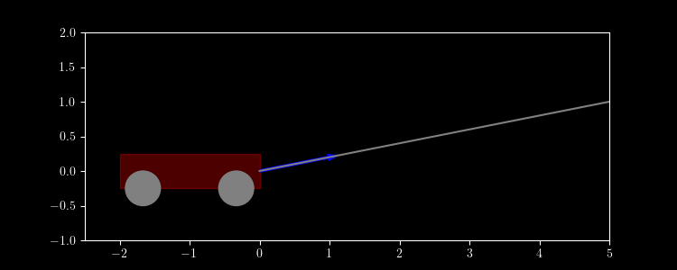

Drew Youngren dcy2@columbia.edu
Let $C$ be a smooth curve parametrized by $\vec r(t) = \langle x(t), y(t) \rangle, a \leq t \leq b$ and $\vec F(x,y) = \langle P(x,y), Q(x,y) \rangle$.
Compute \[\int\limits_C (x-y)\,dx + xy\,dy\] where $C$ is the portion of the clockwise-oriented unit circle from $(1,0)$ to $(0, 1)$.
Solution. $\vec r(t) = \langle \cos t, -\sin t \rangle, 0 \leq t \leq \frac{3\pi}{2}$. We compute
\[ \int_0^{3\pi/2} (\cos t + \sin t)(-\sin t) + (\cos t)(\sin t)\cos t\,dt \]\[ = -\frac{1}{6}-\frac{3 \pi }{4}\]
A wagon is pulled across the floor by a rope 5 meters away and 1 meter up with a force of 7 N. Find the work done. (The wagon weighs more than 7 N.)
Solution. $\vec r(t) = \langle t, 0 \rangle, 0 \leq t \leq 5$. \[\vec F(x,y) = 7\frac{\langle 5, 1 \rangle - \langle x, y \rangle}{|\langle 5, 1 \rangle - \langle x, y \rangle|} \] \[ W = \int_0^5 7\frac{5 - t}{\sqrt{1 + (5 - t)^2}}\,dt \approx 28.7\, \text{N}\text{m} \]
A vector field $\vec F$ is conservative if there is a scalar field $f$ (called a potential) where \[\vec F = \nabla f.\]
The radial vector field $x \,\vec i + y\, \vec j$ is conservative. Its potential is
\[f(x,y) = \frac{x^2 + y ^2}{2}\]
The vector field \[ -y\,\vec i + x\,\vec j \] is not conservative.
If $\vec F = \langle P, Q \rangle$ is a conservative vector field \[P_y = Q_x.\]
Proof. Suppose $\vec F = \langle P, Q \rangle = \nabla f$. \[P_y = f_{xy} = f_{yx} = Q_x .\]
Determine whether each of the following is conservative, and if so, find a potential function.
Conservative. $\displaystyle f(x,y) = e^{xy} + \frac14y^4$
Determine whether each of the following is conservative, and if so, find a potential function.
Not conservative. $\displaystyle P_y = x \neq Q_x = y$
Determine whether each of the following is conservative, and if so, find a potential function.
Conservative. $\displaystyle f(x,y,z) = xy + xz + yz + \frac12 z^2$
Let's compute a path integral of a conservative vector field.
with the usual definitions, \[ = \int_a^b \nabla f(\vec r(t)) \cdot \vec r'(t)\,dt \]
\[ = \int_a^b \frac{d}{dt}(f\circ \vec r )(t)\,dt = f(\vec r(b)) - f(\vec r(a)) \]
If $\vec F = \nabla f$ and $C$ is a continuous path from $P_0$ to $P_1$, then \[\int\limits_C \vec F\cdot d\vec r = f(P_1) - f(P_0).\]
Corollary. If $C$ is a closed curve, \[ \oint\limits_C \nabla f\cdot d\vec r = 0 \]
Compute the work done against gravity carrying a 15 lbs bowling ball up a helical ramp 70 ft high.
$\vec F = \langle 0, 0, 15 \rangle = \nabla (15z)$ \[ W = \int_C \vec F\cdot d\vec r = 15(70) - 15(0) = 1050 \text{lbs}\cdot\text{ft} \]
Compute the line integral \[\int_C (x^2 - xy)\,dx + (y- \frac{x^2}{2} + 2)\,dy \] where $C$ is the polygonal path from $(2,0)$ to $(0,0)$ to $(2,1)$ to $(0,1)$.
Suppose a force is given by $\vec F = -\nabla f$ and a particle of mass $m$ traverses a path $\vec r(t), a \leq t \leq b$.
\[ \text{W} = \int\limits_C \vec F\cdot d\vec r\]Suppose a force is given by $\vec F = -\nabla f$ and a particle of mass $m$ traverses a path $\vec r(t), a \leq t \leq b$.
\[ \text{W} = \int\limits_C \vec F\cdot d\vec r = f(\vec r(a)) - f(\vec r(b))\]Suppose a force is given by $\vec F = -\nabla f$ and a particle of mass $m$ traverses a path $\vec r(t), a \leq t \leq b$.
\[ \begin{align*}\text{W} &= \int_a^b m\vec r''(t)\cdot \vec r'(t)\,dt \\ &= \int_a^b \frac{d}{dt}\left(\frac12 m \vec r'(t) \cdot \vec r'(t) \right)\,dt \\ &= \frac12 m |\vec r'(b)|^2 - \frac12 m |\vec r'(a)|^2 \end{align*}\]Suppose a force is given by $\vec F = -\nabla f$ and a particle of mass $m$ traverses a path $\vec r(t), a \leq t \leq b$.
\[ \frac12 m |\vec r'(b)|^2 + f(\vec r(b)) = \frac12 m |\vec r'(a)|^2 + f(\vec r(a)) \]The Gravitational force from a mass $M$ at the origin on a mass $m$ at position $\vec x$ is \[ \vec G = -\frac{GMm \vec x}{|\vec x|^3}. \] Find the work done moving an object from the surface of the earth to the end of the universe.